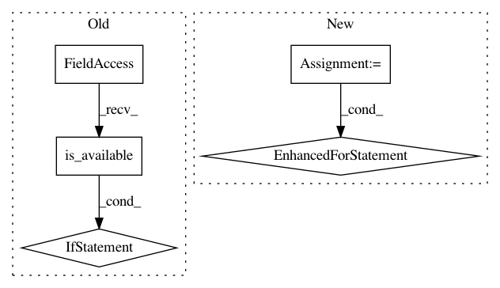

b44364811b14bde01d84554624a9bffa0e4976e3,examples/cora_gcn.py,,,#,41
Before Change
model = Net()
if torch.cuda.is_available():
train_mask, val_mask = train_mask.cuda(), val_mask.cuda()
test_mask, model = test_mask.cuda(), model.cuda()
optimizer = torch.optim.Adam(model.parameters(), lr=0.01, weight_decay=0.005)
def train():
After Change
old_val = 0
cur_test = 0
for _ in range(0, 200):
train()
val = test(val_mask)
if val > old_val:
old_val = val
cur_test = test(test_mask)
acc.append(cur_test)
print("Run:", run, "Test Accuracy:", acc[-1])
acc = torch.FloatTensor(acc)
In pattern: SUPERPATTERN
Frequency: 4
Non-data size: 5
Instances
Project Name: rusty1s/pytorch_geometric
Commit Name: b44364811b14bde01d84554624a9bffa0e4976e3
Time: 2018-03-07
Author: matthias.fey@tu-dortmund.de
File Name: examples/cora_gcn.py
Class Name:
Method Name:
Project Name: junyanz/pytorch-CycleGAN-and-pix2pix
Commit Name: 9ba91fa13cbb1e7bc4069e46469b34abb5ca4869
Time: 2018-05-22
Author: tongzhou.wang.1994@gmail.com
File Name: models/base_model.py
Class Name: BaseModel
Method Name: load_networks
Project Name: kymatio/kymatio
Commit Name: f13c36650a7a80cf986fef1671ecd440cad6b483
Time: 2018-11-21
Author: janden@flatironinstitute.org
File Name: examples/2d/compute_speed.py
Class Name:
Method Name: